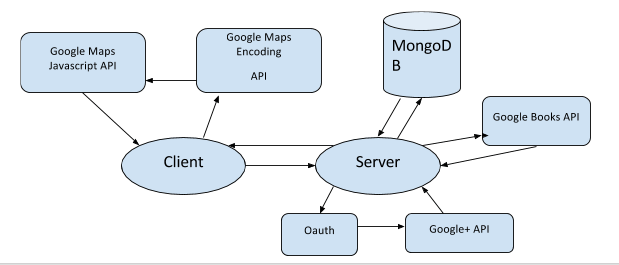

În urma folosirii unei arhitecturi de tip MVC și totodată modularizată și scalabilă, împreună cu îmbinarea acestor tehnologii, aplicația Bookmark are ca utilitate finală transpunerea într-un sistem virtual a întregului proces ce reprezintă organizarea unui club de citit în viata reală, un iubitor de cărți având totul la o distanță de câteva click-uri. Aplicația folosește o arhitectură MVC (Leff, 2001) modularizată și scalabilă, combinând următoarele tehnologii:
- pe partea de client: React, Redux, HTML, CSS, Webpack şi serviciile de la Google – Google Maps Javascript API şi Google Maps Encoding API
- pe partea de server: Node (Tilkov & Vinoski, 2010), Express, MongoDb (online) și serviciile de la Google – Google Books API şi Google+ API
Codul aplicației este împărțit in două mari părți: frontend (client) si backend (server). Astfel toate rutele exportate de server pot fi reutilizate oricând la o integrare cu o altă platformă de client. Arhitectura aplicației este reprezentată în diagrama următoare.

Pentru implementarea bazei de date, aplicația Bookmarker folosește MongoDB ca sistem de gestiune al acesteia, întrucât este ușor de integrat și de folosit în Node.js.
Conexiunea la baza de date se realizează la nivel de server, cu ajutorul pachetului mongodb. Acesta conține metode ce ajuta la conectarea la baza de date, precum și pentru acțiunile necesare pe fiecare colecție din baza de date.
Baza de date a aplicației Bookmarker conține patru colecții: users, bookClubs, messages și comment-threads (i.e utilizatorii aplicației, cluburile de carte create la accesarea fiecărei cărți în parte, mesajele din discuțiile private și comentariile ce reprezinta recenziile adăugate pe pagina cărții).
Design-ul aplicației este unul destul de aerisit, pentru a da libertate utilizatorului sa observe ușor acțiunile pe care le poate face în aplicație. Așadar, pagina de autentificare conține butoanele clasice de logare (atât cu user normal cat și cu contul de Google) și înregistrare, iar fundalul este reprezentat de o imagine cu un băiat care citește, imagine sugestivă pentru scopul aplicației.

În urma înregistrării, cititorul va fi redirecționat pe pagină de start a aplicației, unde va găsi informații despre activitatea lui și va putea vizualiza și un carusel cu niște cărți recomandate pentru el (bazate pe stilurile alese la înregistrarea în aplicație).

Apoi, la accesarea unei cărți, utilizatorul va putea vizualiza cu ușurință informații despre aceasta și despre clubul de citit asociat ei, cât și recenzii oferite de alți cititori.
În concluzie, aplicația Bookmarker rezolvă impedimentele menționate în articolul din luna iunie, întrucât:
în urma înregistrării în aplicație, utilizatorului îi sunt recomandate niște cărți bazate pe stilurile de citit alese anterior. Cu aceasta funcționalitate, iubitorului de cărți îi va fi mult mai simplu să aleagă o carte care mai mult ca sigur îi va fi pe plac. Când va accesa cartea, un club de citit va fi creat automat pentru cartea respectivă (dacă nu exista deja) și utilizatorul poate să se alăture cititorilor înregistrați în club printr-un simplu click.
-
Pentru a-și procura cartea, un sistem de împrumutare îi stă la dispoziție. Utilizatorul poate vizualiza toți cititorii din club pe o hartă, fiecare din ei fiind poziționați în locul geografic corespunzător adresei introduse atunci când s-au înregistrat în aplicație. Printr-un click pe o persoana de pe hartă, se poate iniția o discuție privată. În funcție de tipul de format al cărții cerute ca împrumut există două soluții. Fie:
format fizic – cei doi care discută se vor întâlni în viata reală și unul îi va preda celuilalt cartea
format electronic – asta presupune ca cel care este contactat s-a înregistrat cu contul de Google și are pe raftul de cărți din Google Books cartea respectivă, iar tot ce trebuie sa facă e sa ii paseze utilizatorului care a inițiat discuția o adresă de descărcare a cărții cerute
În concluzie, alegerea cărții nu mai presupune și implicarea altor persoane, clubul de citit fiind asociat unei cărți recomandate fiecărui utilizator în parte, așadar sigur îi va face plăcere să o citească; sincronizarea calendarelor a N persoane nu va mai reprezenta o problemă, întrucât sistemul se ocupă de asta și procurarea cărților va fi mult mai rapidă cu funcționalitatea de împrumutare de cărți.
În stadiul actual aplicația Boormarker își atinge scopul inițial propus, însă este loc de îmbunatățiri, dintre care putem enumera:
Optimizare algoritm recomandări de cărți
Preluarea cărților din Google Books după categoriile acestora este, actualmente, cam greoaie, de aceea timpul de răspuns e destul de mare. Ar trebui căutată o soluție în rezolvarea acestei probleme sau, de ce nu, apelarea la alte API-uri, cum ar fi cel pus la dispoziție de Amazon.
Campanii de monetizare
Avem în vedere abilitatea utilizatorilor de a putea căuta o carte pe mai multe site-uri, de a putea face o comparare de prețuri și în final, de a se hotărî la o librărie, de unde să o procure. Aceasta funcționalitate ar da libertate cititorului, astfel încât nu ar mai fi condiționat de descărcarea cărții în format electronic sau de a împrumuta cartea de la un alt utilizator. Integrarea cu mai multe librării online ar creste și popularitatea aplicației.
Integrare de notificări pe email
Aceasta funcționalitate ar putea să intervină la fiecare acțiune ce se răsfrânge asupra utilizatorului, cum ar fi: apropierea sfârșitului perioadei de citit sau de făcut dezbatere, ieftinirea unei cărți din lista de dorințe, contactarea de către un alt utilizator pe chat etc. Sau chiar notificarea zilnică/săptămânală de cărți recomandată și pe mail, nu doar în aplicație. Astfel, cititorul ar fi întotdeauna conștient de ce se întâmplă în aplicație, fie ca o accesează sau nu. Bineînțeles, va fi și o modalitate prin care se poate dezabona, pentru a nu fi spamat cu informații inutile.
Cuantificarea popularității utilizatorilor
Aceasta implică setarea unei unități măsuri pe profilul fiecărei persoane, care se autoincrementează pe măsura ce aceasta fie: participă în mai multe cluburi (ceea ce înseamnă că citeste din ce în ce mai mult, teoretic), împrumută foarte des cărți altor utilizatori (ceea ce semnifică faptul că e implicat și ajută la dezvoltarea aplicației), participă în recenzarea unei cărți foarte mult etc.
Optimizarea funcției de discuție privată
Este de dorit ca pe viitor să se poată crea și discuții între mai mulți useri. Pe partea de server această funcționalitate e implementată în asa fel încât se pot crea discuții și între mai mulți utilizatori, însa pe partea de client este nevoie de o schimbare a design-ului.
Referințe
- Leff, A. and J. T. Rayfield (2001) Web-application development using the Model/View/Controller design pattern Proceedings Fifth IEEE International Enterprise Distributed Object Computing Conference, pp. 118–127, 2001. http://ieeexplore.ieee.org/document/950428/
- MongoDB Tutorial [Online] http://www.tutorialspoint.com/mongodb/
- Tilkov S. and S. Vinoski (2010). Node.js: Using JavaScript to Build High-Performance Network Programs. IEEE Internet Computing, vol. 14, no. 6, pp. 80–83, 2010. http://doi.ieeecomputersociety.org/10.1109/MIC.2010.145